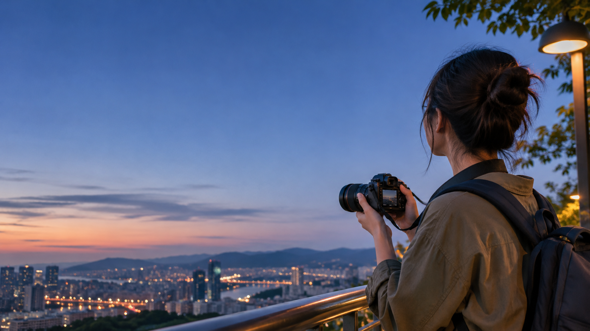
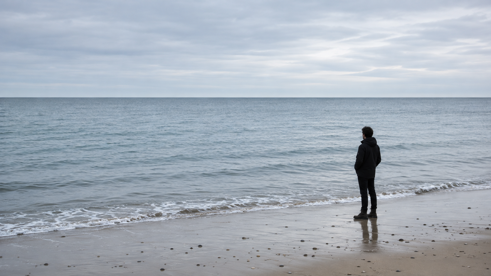
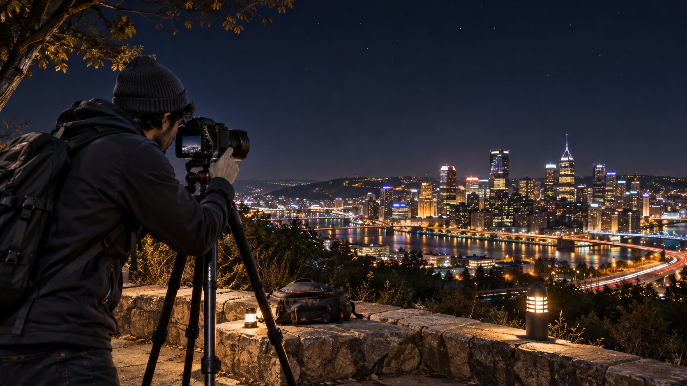

PHOTOGRAPHY 101
攝影新手入門
從曝光、景深到構圖與夜景
教學內容由攝影 LLM Wiki 整理
02
學習地圖
理解光圈、快門與 ISO 的分工
看懂清晰範圍如何改變
凝結動作或留下移動痕跡
安排主體、地平線與視線方向
處理低光、腳架、對焦與測光
學完後，你應能說明每項設定改變了什麼，以及它帶來的代價。
03
相機與手機的共同原理
兩者都在處理光線、時間、清晰範圍與畫面安排。
可以共用
曝光取捨、動態表現、景深觀念、三分法與夜景思考順序。
需要分開
手機可能沒有可變實體光圈，夜景模式也可能合成多張影像。
本簡報範圍
先教共同原理。五篇來源不足以支持完整的手機操作步驟。
04
曝光三要素
相近亮度可以由不同設定組合得到，但畫面效果不會相同。
EXPOSURE
05
光圈 Aperture
f-number 越小，光圈開口越大。
- 大光圈
- 進光較多，通常景深較淺
- 小光圈
- 進光較少，通常景深較深
光圈太小可能受到繞射影響，畫面不一定更銳利。
06
快門速度 Shutter Speed
快門越快，進光時間越短。數值只是起點，主體速度、方向、距離與焦段都會改變結果。
07
ISO 與雜訊
提高 ISO 能配合所需的光圈與快門，但通常會增加雜訊。
來源以「感光度」作入門解釋。本課不把它延伸成感光元件物理特性的完整說明。
08
曝光取捨
先決定你最在意的畫面效果，再讓另外兩項設定配合。
09
QUICK CHECK 01
哪個設定通常帶來較淺景深？
10
景深 Depth of Field
景深是看起來「可接受清晰」的距離範圍。清晰到模糊是漸進過渡，不是一條突然切換的界線。
11
景深的控制因素
12
焦段與景深
比較條件不同，結論也不同。
換焦段時同時改變拍攝距離，總景深可能接近。
使用較長焦段時，構圖與放大倍率改變，景深會不同。
長焦放大背景模糊，可能讓背景看起來更糊。這和景深範圍本身不是完全相同的問題。
13
快門與動態
同一快門速度下，速度、方向與主體在畫面中的大小仍會改變模糊量。
14
追焦 Panning
曝光期間讓相機持續跟隨主體。
- 01先選有紋理的背景
- 02從約 1/30 秒附近測試
- 03平順跟隨主體並按下快門
- 04拍完繼續跟隨，檢查後再調整
成功率來自練習。快門值會隨主體速度、距離與焦段改變。

15
三分法 Rule of Thirds
把地平線或主體安排在三分線附近，協助控制畫面比重與方向空間。
16
打破三分法
三分法是一項指引。對稱、正面感或刻意失衡都可能需要中央構圖。
主體有什麼特別？
你想強調什麼？
你想讓觀眾感受到什麼？
若三分法能幫助意圖，就使用。若不能，就有理由地打破。
17
QUICK CHECK 02
想讓騎士清楚、背景形成水平線條，應嘗試什麼？

18
夜景攝影
低光會放大曝光時間、景深與雜訊之間的取捨。穩定相機通常是第一步。
19
夜景拍攝順序
- 1穩定腳架、地面與構圖
- 2景深依主體距離選光圈
- 3動態決定可接受的快門
- 4雜訊再調整 ISO
- 5檢查亮部、對焦與晃動
20
夜間對焦與測光
低亮度與低對比都可能讓 AF 失敗。
對焦
尋找與主體距離相近的亮點，或使用小型照明輔助。
測光
檢查明亮招牌與路燈，避免高光完全失去細節。
長曝光
超過一般快門範圍時，可使用 Bulb 與外部計時。
AF 點與模式依器材而異。來源中的中央 AF 點建議不能套用到所有現代相機或手機。
21
QUICK CHECK 03
拍攝完全對稱的建築入口，哪個選擇最合理？
22
拍攝前的五個問題
- 我最想保留什麼畫面效果？
- 主體會不會移動？
- 需要多大的清晰範圍？
- 構圖如何引導視線？
- 拍完後，我檢查了亮部、對焦與晃動嗎？
理解取捨，下一張照片就有清楚的調整方向。